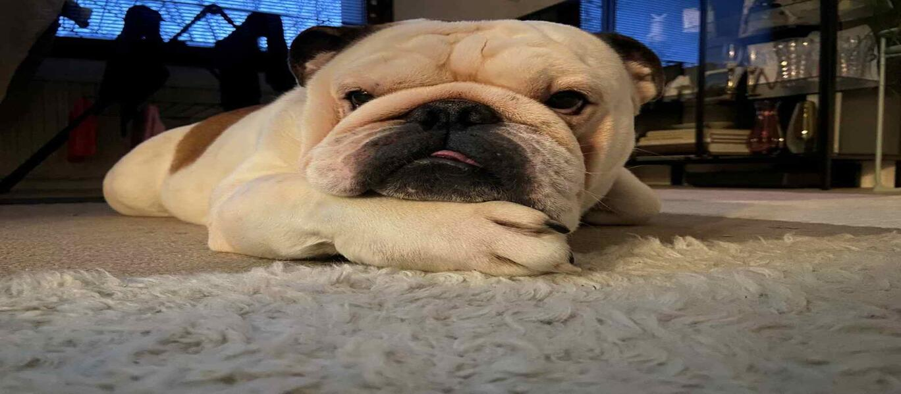
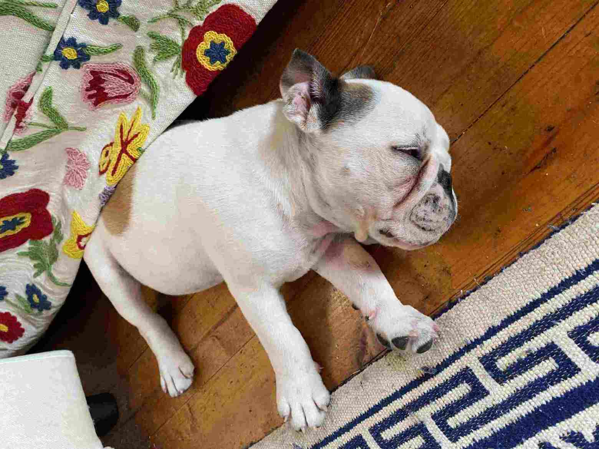
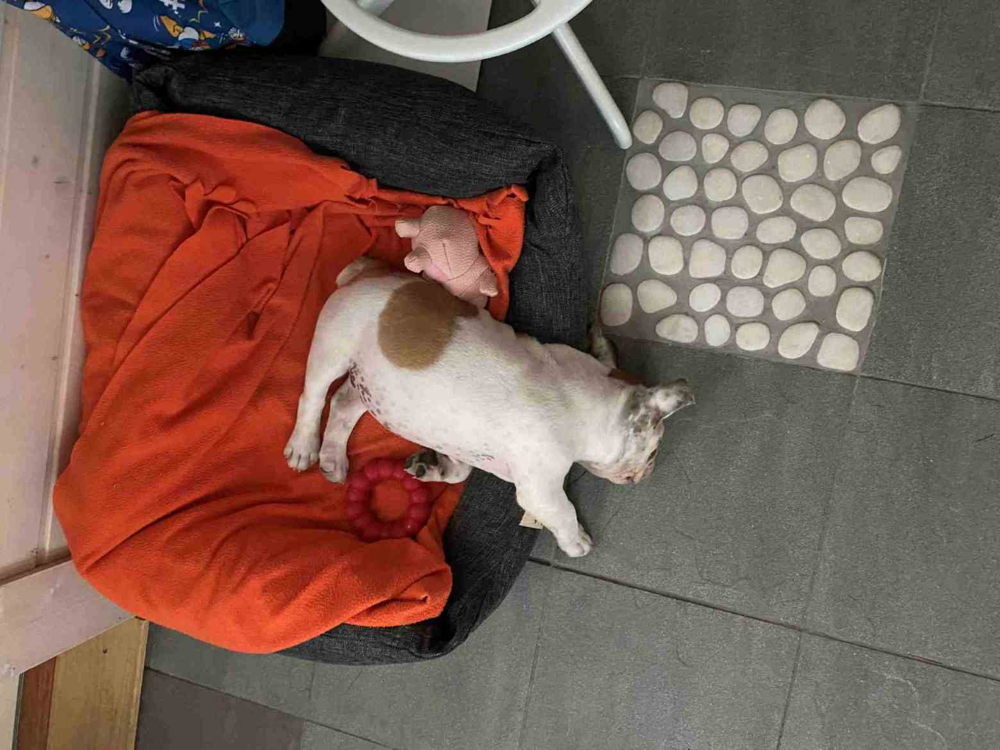
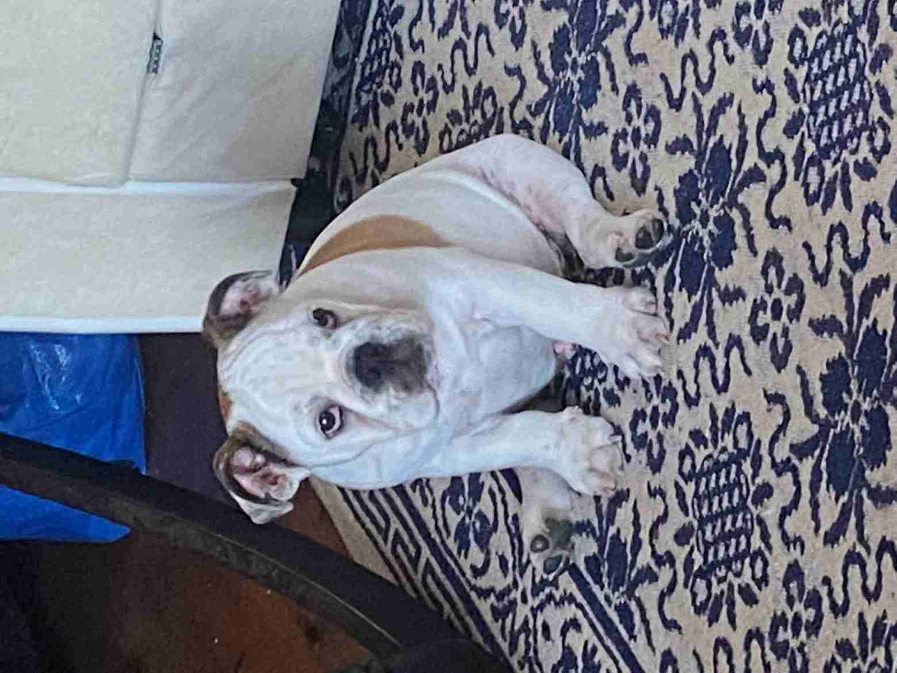
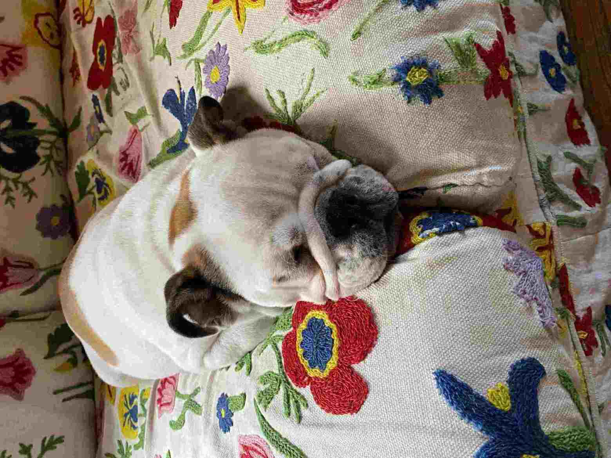
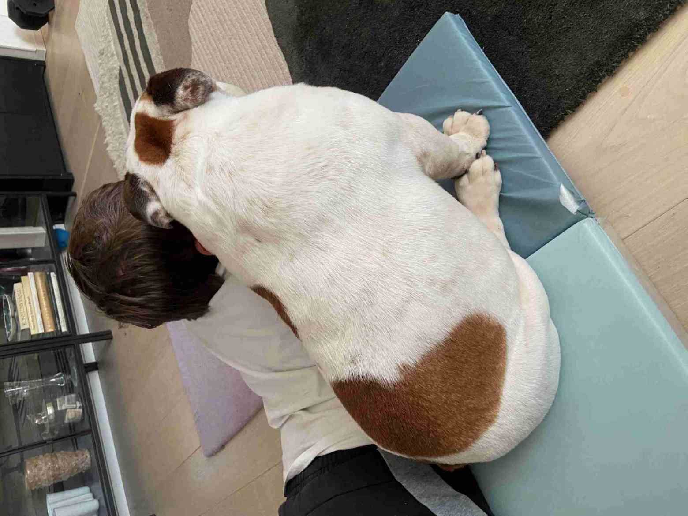
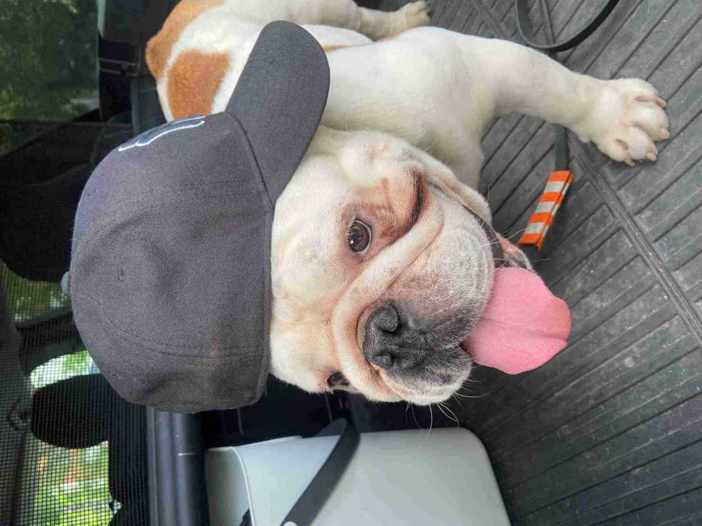
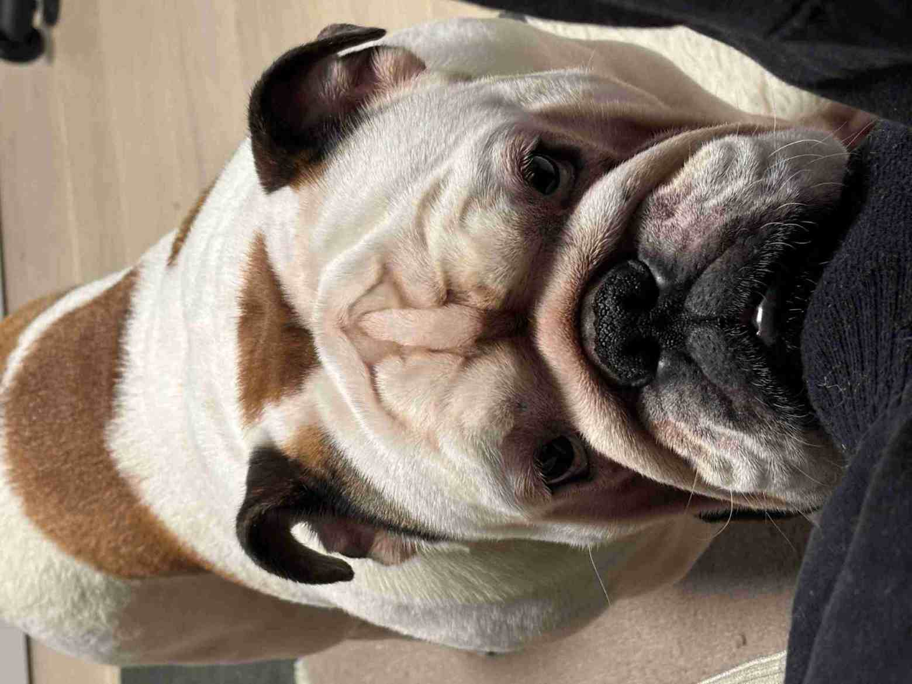
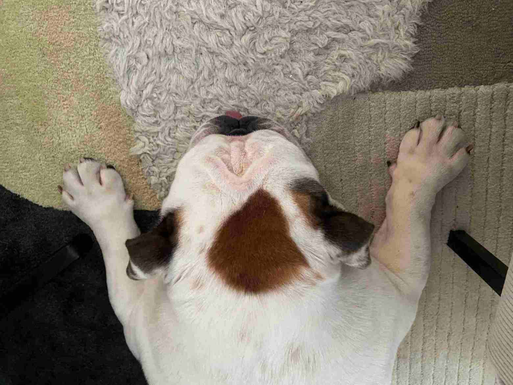

Galleria
Etusivu Yhteystiedot
Kuvakokoelma bulldoggin eri elämäntilanteista:
|

Pienenä minua väsytti kamalasti |

Pienenä en oikein pysynyt sängyllänikään |
|

Nuorempana jalkani olivat liian isot |

Tykkäsin myös nukkua sohvalla pienempänä |
|

Läheisyysterapiaa perheeni pojalle |

Automatkoilla on myös mukavaa! |
|

Ja kun haluan jotain, ilmaisen sen näin |

Ja joskus olen rättiväsynyt |